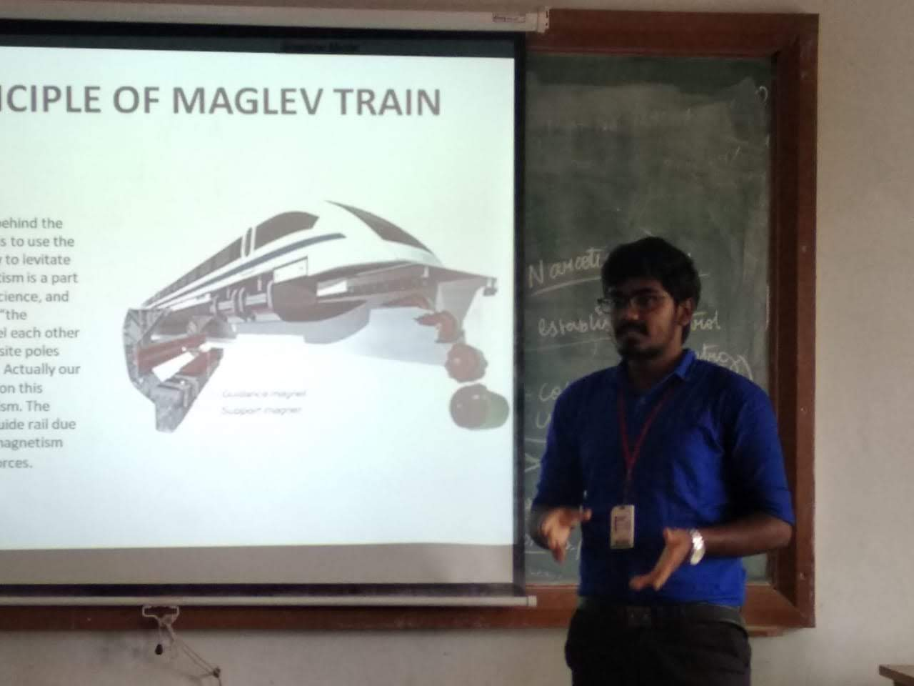

In both my college and school years, I didn't just focus on academics; I embraced a wide range of activities that enriched my life and contributed to my personal and professional growth.
Here's a glimpse into some of the exciting activities and experiences I had:

PAPER PRESENTATION
- Presented a Paper on "6 STROKE ENGINE" at SNS College Of Technology, Coimbatore.
- Presented a Paper on "4D PRINTING" at Jansons Institute of Technology, Coimbatore.
CO-CURRICULAR ACTIVITIES
- Got Third Prize in SMART INTERVIEW at SNS College of Technology, Coimbatore.
- Completed - NTPEL 12 week Courses in PDM and RM with Elite(60%) and Elite+Silver(85%) .
- Participated in one day training course Understanding Additive Manufacturing at CIT.

EXTRA-CURRICULAR ACTIVITIES
- Participated in FOOTBALL and secured FIRST Position in 17th Annual Sports Meet at Velalar College of Engineering and Technology during 2017 – 2018.
- Got FIRST & SECOND Position in Zonal level ATHLETE MEET at both 400 and 200 meter dash during 2014 – 2015.
- In under 17 category, secured FIRST position in 400 meter dash at District level ATHLETE MEET during 2014 – 2015.